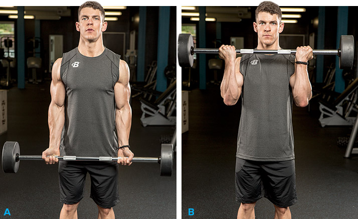
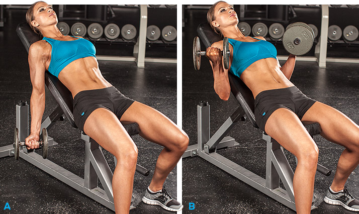
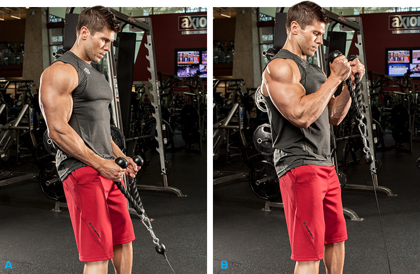
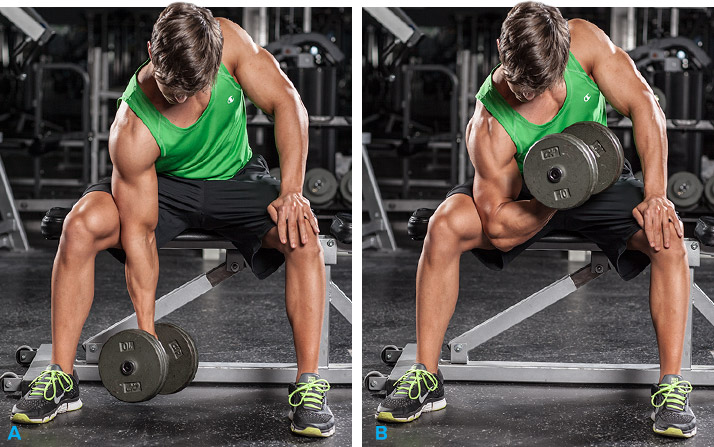

Workout!!
HOME
Exercise 1 Barbell Curl

The first biceps exercise to perform is barbell biceps curls, which will also allow you to overload those biceps with a heavy weight. Most trainees are slightly stronger when lifting a barbell versus a set of dumbbells, so this is a great one for maximum strength development.
When doing the exercise, the primary thing to focus on is that you're not cutting the movement pattern short at all, and that you're not allowing momentum to cause you to lean backward as you hoist the weight upwards.
This is one of the most common mistakes with this exercise—momentum performs more of the work than your muscles actually do. If you perform it in a slow and controlled manner, that should reduce the chances of this happening significantly and allow you to place a higher intensity deep within the muscle fibers.
Exercise 2 Incline Dumbbell Curl

The second exercise to add is incline dumbbell curls. This exercise is one of the best to help prevent that momentum issue from happening as we just discussed, since it essentially restricts the movement of the back.
When doing this exercise, you will feel maximum tension on the biceps muscle belly, so don't be surprised if the weight is slightly lower. As long as you're pushing yourself hard, using the lower weight but maintaining proper form will be the way to go for results.
Exercise 3 Standing Biceps Cable Curl

If you're looking to target the deep-tissue muscle fibers, cable curls are a good bet. Since the pattern of movement is less stable with this movement, due to the constant tension provided by the cable, you will call all the stabilization muscles surrounding the biceps into play as you execute the exercise.
You can use a variety of different attachments to perform the cable curls including a rope, a straight bar, or rotating cable handles that allow you to work a single arm at a time.
Exercise 4 Reverse grip bent-over rows
After you've included regular straight rows within the program, you may also want to consider adding reverse-grip rows as well. These are going to place a slightly greater stress on the biceps muscles as opposed to straight rows, so they will be a better exercise for strictly targeting the biceps.
Depending on what muscle group you think of contracting as you bring the weights up to the body (the biceps or the back), that too will impact the nature of the muscle stimulus.
Exercise 5 Concentration Curls

Finally, the last of the exercises to consider to blast your biceps into growth are concentration curls. When done while sitting, these will also limit the degree momentum plays in the execution of the exercise and place all the emphasis right on the biceps muscle.
There will be no helper muscles called into play when doing concentration curls (when done properly), so this is a good one to add in at the very end of your workout when you're really looking to finish off the biceps and fully exhaust them